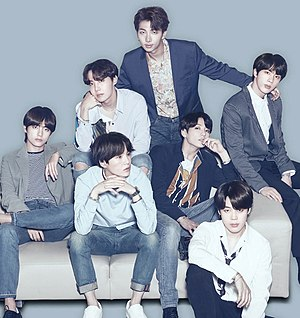

Camilla Cabello - Havana
Selena Gomez - Good For You
BTS - Idol
Troy Sivan - Youth
Ed Sheeran купить билеты на 50% дешевле прямо сейчас!
http:\\www.edsheeranspb.ru
a-ha в Санкт-Петербурге! Лучшие места у нас!
http:\\www.ahaspb.ru
Бесплатная музыка без рекламы 24 часа 7 дней в неделю. Слушайте и скачивайте!
http:\\www.musicfreeforme.net
Колонки Samsung со скидкой 20%. Успейте купить!
http:\\www.samsung.com
Ed Sheeran купить билеты на 50% дешевле прямо сейчас!
http:\\www.edsheeranspb.ru
a-ha в Санкт-Петербурге! Лучшие места у нас!
http:\\www.ahaspb.ru

| 2010—2014: Формирование, дебют с 2 Cool 4 Skool и O!RUL8,2? |
| Первые участники группы были набраны путём прослушиваний Big Hit в 2010 и 2011 годах. Изначальный состав прошёл через ряд изменений, прежде чем окончательно установиться в 2012 году. За полгода до дебюта участники начали создавать связь с фанатами и укреплять своё имя в Твиттере, а также выкладывать каверы на YouTube и SoundCloud. До дебюта в 2013 году RM уже выступал в качестве андерграундного рэпера и неофициально выпустил несколько треков, включая коллаборацию с Zico. Джин был студентом Konkuk University по актёрскому мастерству перед тем, как пройти прослушивание, а Сюга также был андерграундным рэпером в Тэгу. Джей-Хоуп, который был участником уличной танцевальной команды NEURON был активен на андерграундной танцевальной сцене, участвовал в различных битвах и соревнованиях. Чимин был главным студентом Busan High School of Arts в современных танцах, но позже был переведён в Korea Arts High School вместе с Ви, который прослушивался в Тэгу. Чонгук прослушивался во многих агентствах после ухода из шоу Superstar K, и в конце концов выбрал Big Hit. |
| 2015—2016: Трилогия The Most Beautiful Moment in Life, Wings и мировой тур |
| С 10 по 19 февраля 2015 года BTS выступали в Японии с туром Wake Up: Open Your Eyes. У них состоялись концерты перед 25 000 человек в Токио, Осаке, Нагое и Фукуоке. 28 марта начинается их второй тур в Корее — BTS Live Trilogy — Episode 1: BTS Begins. Третий мини-альбом группы, получивший название The Most Beautiful Moment in Life, Part 1 был выпущен 29 апреля. В июне он был добавлен в список «27 лучших альбомов 2015 года» американским телеканалом Fuse и стал единственным корейским альбомом, попавшим в данный список. 5 мая главный трек «I Need U» выиграл первое место в музыкальной программе The Show, что ознаменовало первую победу группы с момента дебюта в данном шоу. По данным Signal Entertainment, альбом был продан в количестве свыше 180 000 копий с момента релиза. 4 июня был выпущен четвёртый японский сингл «For You», приуроченный к годовщине дебюта коллектива в Японии. В тот же день было выпущено и музыкальное видео. Трек попал на вершину ежедневного чарта Oricon и продался тиражом в 42 611 копий в первый день. 23 июня BTS выпустили видеоклип на их сингл «DOPE (쩔어)» с The Most Beautiful Moment in Life, Part 1, который сумел набрать свыше 1 000 000 просмотров в первые 15 часов с момента выпуска. Песня также заняла 3-е место в мировом сингловом чарте Billboard, хотя была выпущена двумя месяцами ранее. Тур 2015 Live Trilogy Episode: The Red Bullet продолжился с остановками в Малайзии, Латинской Америке, Австралии, США и закончился в Гонконге 29 августа. BTS были частью Summer Sonic Festival, в рамках которого 15 августа выступили в Токио, а 16 августа — в Осаке. 8 сентября было объявлено, что они вернутся 30 ноября с альбомом The Most Beautiful Moment in Life, Part 2. Они также провели трёхдневный тур The Most Beautiful Moment in Life: On Stage с 27 по 29 ноября, где представили трек «Run». 19 октября было объявлено, что группа станет новым представителем спортивного бренда PUMA. На премии Mnet Asian Music Awards они выиграли номинацию «Лучший международный перформер» в знак признания международных поклонников. Они исполнили «Run», а также у них была небольшая коллаборация на сцене с GOT7. 8 декабря была выпущена японская версия «I Need U» как пятый японский сингл. |
| 2017−18: You Never Walk Alone, трилогия Love Yourself и мировое признание |
| 13 февраля 2017 года BTS выпустили расширенное издание альбома Wings под названием Wings: You Never Walk Alone. Предзаказы преодолели порог в 700 тысяч копий. Главный сингл «Spring Day» достиг вершины в восьми главных чартах Кореи; из-за слишком большого потока загрузок произошёл сбой цифрового чарта Melon. «Not Today» достигла 11 строчки в iTunes США, в то время как «Spring Day» − 8 места, сделав BTS первой корейской поп-группой, попавшей в топ-10. Сингл также покорил вершины чартов Брунея, Финляндии, Гонконга, Индонезии, Литвы, Малайзии, Филиппин, Сингапура, Тайваня, Таиланда и Вьетнама; альбом добрался до 1 мест в Армении, Брунее, Финляндии, Индонезии, Казахстане, Латвии, Малайзии, Филиппинах, Сингапуре, Швеции, Тайване, Таиланде и Вьетнаме. В первые сутки после релиза видеоклип на «Spring Day» набрал более 9 миллионов просмотров, тем самым установив абсолютный рекорд среди корейских групп; он также набрал более 20 миллионов просмотров менее чем за 4 дня, что также является рекордом. Впервые новые песни были исполнены в рамках тура 2017 BTS Live Trilogy Episode III: The Wings Tour, который стартовал 18 февраля в Сеуле. 19 февраля состоялась премьера клипа на песню «Not Today», который набрал более 10 миллионов просмотров за первые сутки с момента релиза, что сделало его самым просматриваемым клипом корейских групп за всё время. 22 февраля «Spring Day» дебютировал в чарте Billboard Bubbling Under Hot 100 на 15 месте, тем самым сделав BTS единственной мужской корейской группой, когда-либо попадавшей в этот чарт. 10 мая состоялся релиз японской версии «Blood Sweat & Tears», выпущенной в качестве седьмого японского сингла. 21 мая группа одержала победу в номинации «Лучший артист социальных сетей» на премии Billboard Music Awards, тем самым став первым корейским артистом в истории данной церемонии, получившим номинацию, посетившим премию и выигравшим её. 4 июля был выпущен ремейк на сингл «Come Back Home» Seo Taiji & Boys. 5 июля официальный логотип группы был изменён, а иностранное название стало расшифровываться как «Beyond the Scene», что означает «юноши, которые открывают дверь и двигаются дальше». С 10 по 12 августа были представлены фото-тизеры участников к дорамному проекту «Люби себя» (англ. Love Yourself), который будет выходить на протяжении 2017 и 2018 годов. С 16 по 19 августа были представлены видео-тизеры. 25 августа начался предзаказ мини-альбома Her, который станет первой частью серии Love Yourself. 3 сентября предзаказ достиг отметки в 1 миллион 50 тысяч копий, тем самым сделав BTS первой мужской корейской группой, достигшей такого показателя (ранее рекорд принадлежал EXO). 18 сентября состоялся релиз пятого мини-альбома Love Yourself 承 'Her'. Он стал № 1 в iTunes 73 стран, что является абсолютным рекордом среди корейских артистов. Согласно данным Hanteo, в первый день было продано 455 тысяч 888 копий нового альбома, что является лучшим результатом за всю историю чарта. Видеоклип на сингл «DNA» за первые 8 часов с момента релиза набрал более 10 миллионов просмотров, что стало лучшим результатом среди всех корейских групп, а просмотры за сутки перешагнули отметку более чем в 20,5 миллионов, что также стало абсолютным рекордом (предыдущий рекорд принадлежал Black Pink). 25 сентября «DNA» вошла в чарт Billboard Hot 100, расположившись на 85 месте, что сделало BTS первой мужской корейской группой, когда-либо попадавшей в данный топ и четвёртым корейским артистом в целом (после Wonder Girls, PSY и Сиэл). Альбом также дебютировал на 7 строчке Billboard 200, тем самым группа обновила свой же рекорд в данном чарте (в октябре 2016 года они попали на 26 место с Wings) |